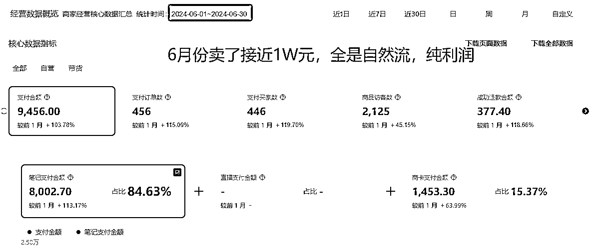
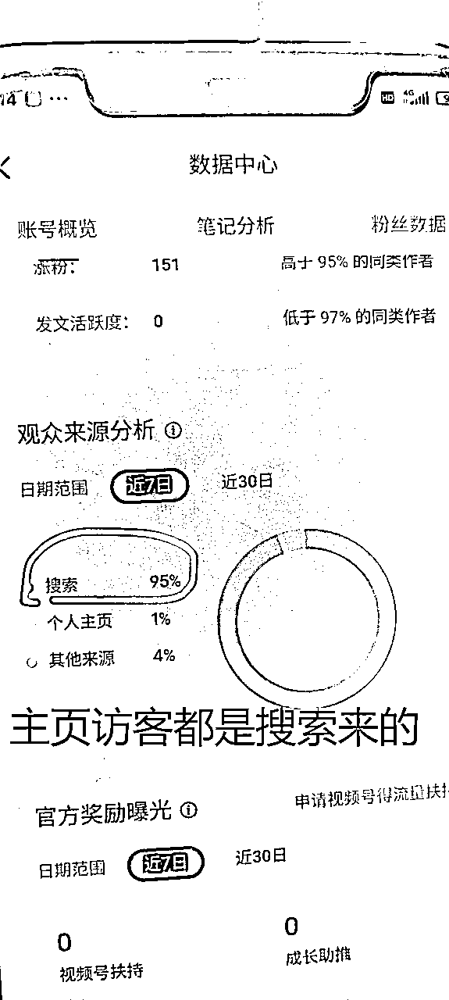
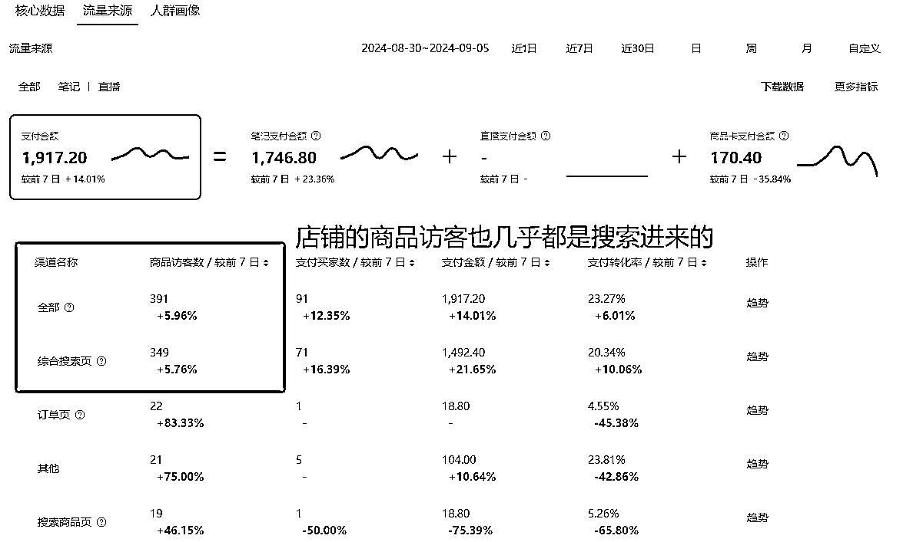
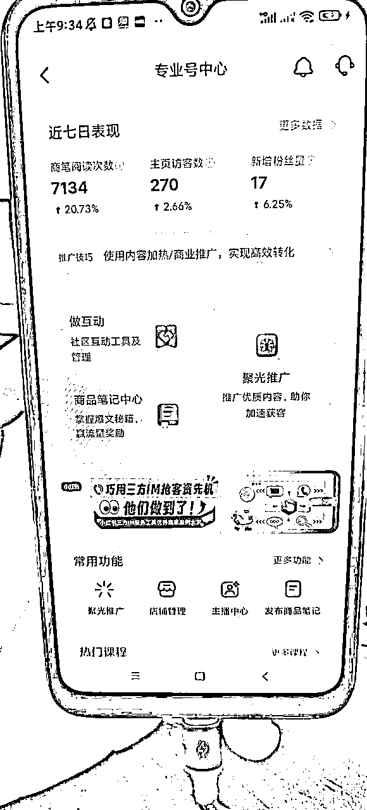
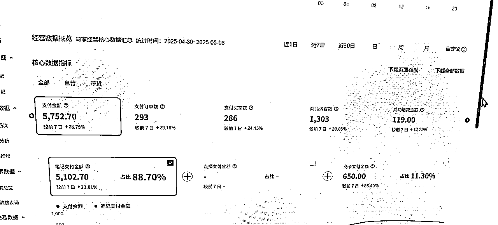
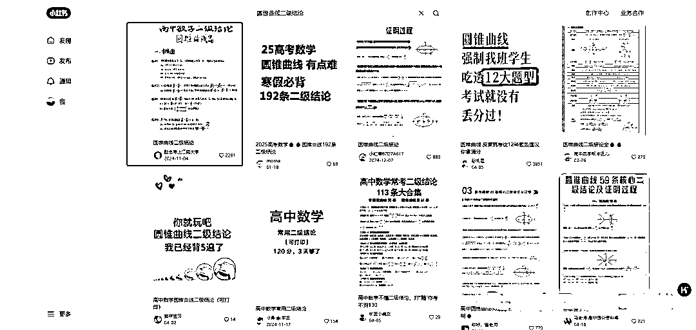
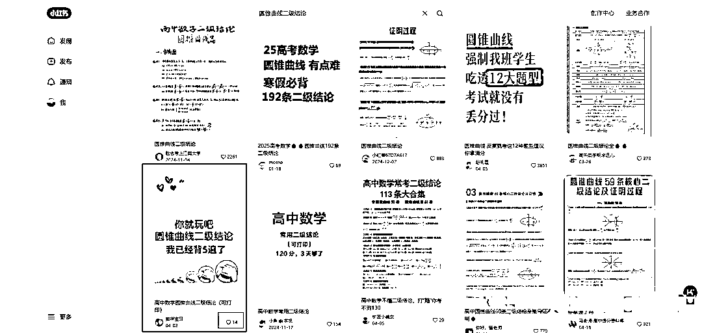
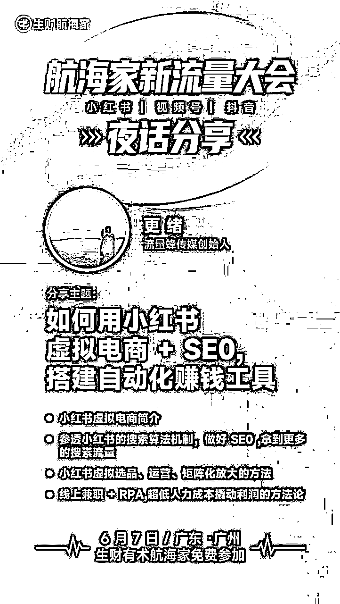

来源：https://o7nsrridj4.feishu.cn/docx/CAR5dQWYAofj0UxJk0PcHYw4nXf
各位圈友大家好，好几天不见，我是更绪，互联网最潇洒的00后，生财有术特级传术师，
目前在成都这边创业，团队主要围绕小红书这个平台，从事小红书电商、小红书线上获客、小红书本地生活相关、小红书品牌营销等业务，
我是在20年，大一的时候了解并加入生财有术，在生财不断学习并成长，毫不夸张的说，我就是从生财有术长出来的，我现在拥有的商业认知、各种赚钱能力都是从生财有术习得的，
受邀参加生财6.7号在广州举办的线下大会，并会组织一个夜话分享我们团队做了一年多的小红书虚拟电商+SEO这个项目，今天来给大家预热一下，
我从0开始完整跑通这个项目的复盘，去年9月写过一篇精华贴的复盘👉 ，
其中很多规则上的东西有一些变动，但底层逻辑没什么变化，感兴趣的话大家可以去看看，
2024年4月之前，我的主要业务是茶叶等高复购率且价格不透明的消费品，通过聚光投放往私域引流，借助聚光的投放红利去扩大私域，赚复购的钱，
当时恰逢茶叶淡季，且自己心里明确知道聚光的投放在当时有红利，所以就想着利用虚拟产品0成本，无需考虑供应链等繁琐的事情，
如果能配合聚光投放快速放大，将会是一个很有想象空间的生意，
一年多之前的聚光，在客资线索投放的表现很不错，但是在当时的电商投放的表现却十分拉跨，当时小红书还没有专门的电商投放工具——乘风，
我在测试虚拟产品的电商投放的时候，效果很差，要么就是跑不出去量，要么就是ROI连1都跑不到，
经历了2个月心态上的折磨，对这个项目的测试处于放养状态了，没怎么管了，
但是在第三个月的时候，我几乎已经完全没有管这个项目的时候，它的数据却在往上走，我除了客服工作之外，没有采取任何的动作，
第三个月在0运营动作，0篇笔记发布的情况下有接近1w块的被动收入，很异常的一个现象，

于是我马上对这个店铺和账号进行了数据分析，发现账号的访客还有店铺的成交，用户的来源全是搜索，全部都是通过搜索看到我的笔记，然后被种草，从而下单，


作为一个吃到过公众号和知乎SEO红利的人，我的眼睛亮了起来，然后就有了这个深耕了一年多的项目，
小红书的用户已经养成了非常强烈的搜索习惯，很多人都调侃，现在大家都把小红书当百度来用，
虽是调侃，也是事实，小红书有超过65%的流量都是搜索流量，也就是说每产生100个小眼睛，至少有65个小眼睛是用户在搜索后产生的，
流量基数足够大，这是这个项目的基础，拥有巨大的流量洼地，
搜索流量是非常精准的，因为用户本身就是带着需求来的，所以转化率极高，有一种说法，1个搜索流量=30个推荐流量，从转化率和成交的客单价值来说，我觉得一点不夸张，甚至我觉得还不止这个水平，
举个例子：
我公司的同事，2月份自己做了一家小红书虚拟店铺，
无意中，翻了一下这个店的笔记数据和店铺数据，然后算了个账，感觉很有意思，这个店铺所绑定的小红书账号，每产生1000个小眼睛，就能创造800块的纯利润，
推算过程如下：
在小红书创作者中心的数据后台可以看到，这个账号的笔记，最近7天一共有7134个小眼睛，

而小红书店铺最近7天有1303个访客，转化率是18.2%，也就是说笔记每产生100个小眼睛，店铺就会产生18个访客，
而1303个访客产生了293个订单，转化率是22.4%，也就是说店铺每有100个访客，就会产生22个订单，
7134个小眼睛，产生了5752元的利润，算上退款的119元，最终是5633元的利润，
5633/7134=0.79元，四舍五入，算个0.8元不过分，
也就是说，这个账号，每产生1个小眼睛，可以获得0.8元的利润，

虽然不是每家店铺都能达到这个数据，但也大差不差，
目前我开的每家小红书虚拟店铺，只要是做的搜索流量，那么单个小眼睛的价值都在0.3元-0.8元之间，
也就是说，每做出来1000个小眼睛，就会有300-800的利润，
人的思维习惯是最难改变的，即使我把小红书搜索流量很香这件事告诉过很多人，
但是绝大部分人依然会纠结，“哎呀，我的笔记小眼睛怎么这么少”，
很少有人能熬到搜索流量涨起来的时候，即使你告诉了他也不行，只有自己经历过了才会耐得住这个寂寞，
这个认知上的差距，是无法逾越的鸿沟，也是这个项目竞争相对低的原因，
虽然我们做的产品是虚拟产品，但也是在小红书开店铺卖，本质也是属于小红书电商的一个部分，所以这个项目是完全符合平台规则的项目，
不同于引流私域的玩法，这个项目不会面临各种各样引流违规的难题，不会涉及到类似于一卡一机等繁琐的注意事项，
甚至小红书平台，也专门也做虚拟产品的商家建立了商家群，这是完全非对抗平台的项目，具有长期可持续性，
关于选品我就不再赘述，生财有大量的小红书电商、小红书虚拟产品的选品方法论，包括我之前的很多文章也都写过，
本项目最大的变化，还是流量渠道的变化——主攻搜索流量，
所以重点来讲讲如何做好小红书的SEO，拿到更多的搜索流量，
小红书笔记的搜索排名主要取决于3个部分，关键词匹配度和搜索满意度和笔记发布时间。
关键词匹配度，也就是我们笔记当中出现的词和用户搜索的词的匹配程度，主要由我们布局的用户搜索长尾词来决定，
搜索满意度，也就是用户在搜索之后看到我们这篇笔记，是否会为我们的笔记停留、点赞、收藏、转发等等，主要由我们的笔记质量决定，笔记要做得好，用户喜欢，他才会做出这些行为，
笔记发布时间，平台要保证有源源不断的新内容的诞生，所以不能让原来的老笔记一直霸占全部的搜索流量，会给新笔记一定比例的曝光倾斜，所以我们可以过一段时间对以前发布的笔记重新编辑，进行二创，再重新发布，以优化笔记的发布时间权重，
举个例子：
小红书搜索圆锥曲线二级结论，搜索结果如下图所示，红框的是排名第一的笔记，
他为什么排第一？点赞收藏数据好，说明用户满意度高，标题和我的搜索词100%匹配，关键词匹配度100%，

那为什么下面这篇14个赞的笔记也能排在前面？

它搜索词全部出现在标题当中，关键词匹配度高，并且是4月份发布的，时间排序权重高，
这里也刚好说明了一个问题，那就是小红书是去中心化的平台，不会让老笔记霸占所有的流量，只要我们充分理解了小红书的搜索算法，然后在做笔记的时候，针对性布局，一定就能拿到搜索流量，
其实大家对流量的感知，都习惯性停留在推荐流量上面，而搜索流量相对来得很慢，所以容易造成心态上面的问题，
搜索流量存在一个大前提，那就是得有人搜，你才有流量，它是被动的，
所以搜索流量的数据积累也是一个漫长的过程，我举个形象一点的例子，
你的笔记发出去后，有1000个人搜索该关键词，平台会随机分配100个人看到你这篇笔记，然后这100个人对你的笔记做出的动作汇集成数据，从而对你的笔记进行搜索排名，
这个过程可能只需要两三天，也可能需要一两个月，关键是一段时间内有多少人搜，
加速这个过程，可以通过投放的方式，保本投放，不为赚钱，只为加速数据积累的过程，提升我们笔记的搜索排名，从而拿到更多免费的搜索流量，
当然，小红书的搜索流量作为一个流量洼地，价值不止在小红书虚拟电商这个地方，在其它场景也有不少应用的地方，我之前在生财写过一篇精华贴，感兴趣可以去看看👉
最后，6月7号，我会去广州参加生财有术的航海家新流量大会，到时候可以再深入和大家聊聊这个项目，
风里雨里，广州等你！
